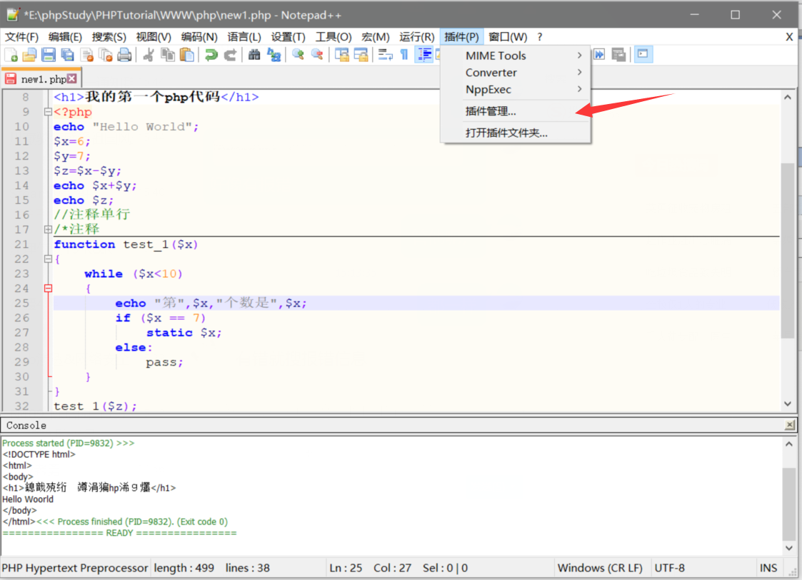
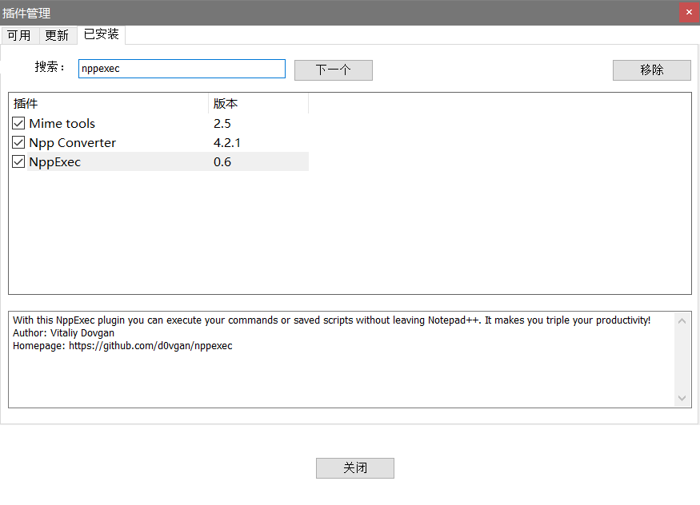
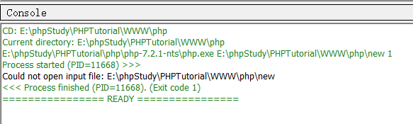
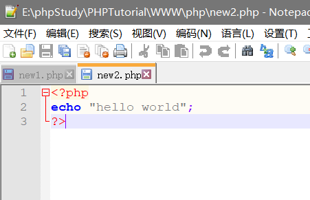
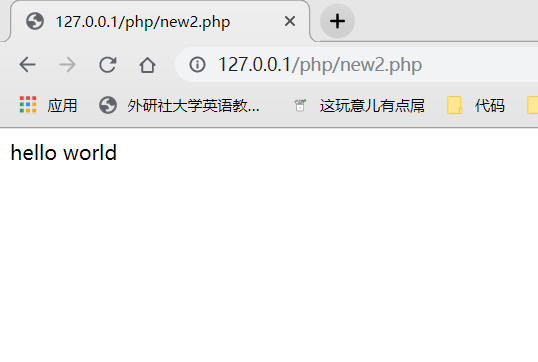
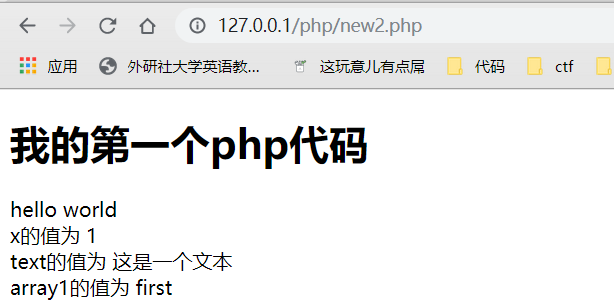
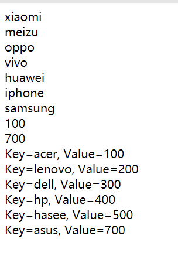

来自之前cnblog的博客
源地址：https://www.cnblogs.com/This-is-Y/p/11466633.html
准备工作：
首先打开notepad++，新建文件，选择PHP语言，打开这个插件管理

找到NPPEXEC插件（我这里已经安装了）：

然后退出来，写一个最简单的php代码，echo啥的，然后按下F6，在弹出的command界面中输入
cd $(CURRENT_DIRECTORY)
E:\phpStudy\PHPTutorial\php\php-7.2.1-nts\php.exe $(FULL_CURRENT_PATH)
之后点击ok就可以运行了

（这里的E:\phpStudy\PHPTutorial\php\php-7.2.1-nts\php.exe是你安装的php的位置，因为我使用的是phpstudy，所以直接用phpstudy里面的php
php文件不要有空格，可以有下划线，不然在运行时会报错，什么什么，如图）
如果你之前有使用过phpstudy的话，可以把php代码文件放在phpstudy的www文件夹中，这样子的话，你可以通过开启phpstudy，然后访问127.0.0.1/php代码文件名（要加上.php)来直接运行你的php文件，比在notepad++中更直观
举个例子，

我的代码文件名叫new2.php，放在www文件夹里的php文件夹中，这样子就可以直接打开了，hello world，这是我的代码

简单代码：

PHP是一个Web编程语言，在编程过程中难免会遇到用echo来输出大段的html和javascript脚本的情况，如果用传统的输出方法 ——按字符串输出的话，肯定要有大量的转义符来对字符串中的引号等特殊字符进行转义，以免出现语法错误。如果是一两处还可以容忍，但是要是一个完整的 html文本或者是一个200行的js我想是谁都会崩溃的。这就是PHP为什么要引入一个定界符的原因——至少一大部分原因是这样的。
1.PHP定界符的作用就是按照原样，包括换行格式什么的，输出在其内部的东西；
2.在PHP定界符中的任何特殊字符都不需要转义。
3.PHP定界符中的PHP变量会被正常的用其值来替换。
4.位于开始标记和结束标记之间的变量可以被正常解析，但是函数则不可以。
PHP中的定界符格式是这样的：
<<<Eof
……
Eof;
(只需要前后一致即可，EOF不是固定的，EOT，ETO什么什么的都可以)
参考https://www.cnblogs.com/jcs-cs-s/p/6922190.html
此外，php中也有print，它与echo的区别在于
- echo - 可以输出一个或多个字符串
- print - 只允许输出一个字符串，返回值总为1
** 提示：** echo输出的速度比print fast，echo no有返回值，print有返回值1。
括号与单双引号的效果粗略来说都是一样的
类型比较
==与===
- 松散比较：使用两个等号 == 比较，只比较值，不比较类型。
- 严格比较：用三个等号 === 比较，除了比较值，也比较类型。
对与多种类型的比较，参考（https://www.runoob.com/php/php-types-comparisons.html）
常量
设置 PHP 常量
设置常量，使用 define() 函数，函数语法如下：
该函数有三个参数:
- name：必选参数，常量名称，即标志符。
- value：必选参数，常量的值。
- **case_insensitive **：可选参数，如果设置为 TRUE，该常量则大小写不敏感。默认是大小写敏感的。
定义常量有两种方式：define与const
一般是define在类外定义常量，const在类内定义常量，并且const必须通过类名::变量名来进行访问。但是php5.3以上支持类外通过const定义常量
字符串
PHP并置运算符（.）
strlen():计算字符长度
strpos(A;B):在A中搜索B关键字
数组：
- 数值数组 - 带有数字 ID 键的数组
- 关联数组 - 带有指定的键的数组，每个键关联一个值
- 多维数组 - 包含一个或多个数组的数组
数值数组和C语言的数组一样，差不太多
关联数组类似python的字典，具体用法如下：

代码输出如上
foreach():来遍历关联数组中的元素
count():计算数组长度
多维数组之后再接受，留个坑
数组排序:
- sort（） - 对数组进行升序排列
- rsort（） - 对数组进行降序排列
- asort（） - 根据关联数组的值，对数组进行升序排列
- ksort（） - 根据关联数组的键，对数组进行升序排列
- arsort（） - 根据关联数组的值，对数组进行降序排列
- krsort（） - 根据关联数组的键，对数组进行降序排列
挺简单的。。。。maybe
详细参考：https://www.runoob.com/php/php-arrays-sort.html
超级全局变量：
好多好多，，，我也不想看，我也不想写
** **直接给个链接吧
** **https://www.runoob.com/php/php-superglobals.html
里边还有$_REQUEST，$_POST和$_GET
函数：
** **使用function()关键字，传参，返回值，什么什么的，都一样，八九不离十。粗略来看如此。
毕竟我也只求一个看得懂php代码。
魔术常量：
** **(下面的都是由两个下划线组成的，前后一共4个下划线)
- ** **LINE:返回当前行号
- ** **__FILE__:返回文件的完整路径和文件名。如果用在被包含文件中，则返回被包含的文件名。 自 PHP 4.0.2 起，__FILE__ 总是包含一个绝对路径（如果是符号连接，则是解析后的绝对路径），而在此之前的版本有时会包含一个相对路径。
- __DIR__:返回文件所在的目录。如果用在被包括文件中，则返回被包括的文件所在的目录。 它等价于 dirname(__FILE__)。除非是根目录，否则目录中名不包括末尾的斜杠。
- FUNCTION:返回函数名称（PHP 4.3.0 新加）。自 PHP 5 起本常量返回该函数被定义时的名字（区分大小写）。在 PHP 4 中该值总是小写字母的。
- CLASS:返回类的名称（PHP 4.3.0 新加）。自 PHP 5 起本常量返回该类被定义时的名字（区分大小写）。在 PHP 4 中该值总是小写字母的。
- TRAIT:首先你得知道什么是trait（参考：https://www.php.net/manual/zh/language.oop5.traits.php（坦白说，我没搞懂））。返回Trait 的名字（PHP 5.4.0 新加）
- METHOD:返回类的方法名（PHP 5.0.0 新加）。返回该方法被定义时的名字（区分大小写）。
- NAMESPACE:返回当前命名空间的名称（区分大小写）。此常量是在编译时定义的（PHP 5.3.0 新增）。
（我猜，，，这些东西有时候还是挺有用的）